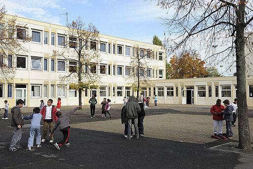
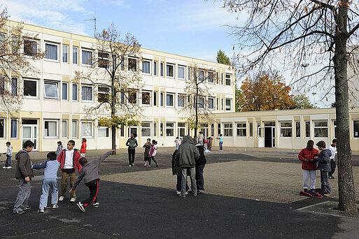
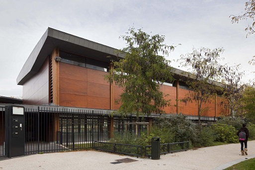
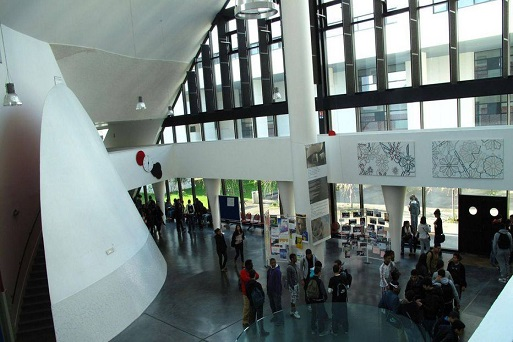
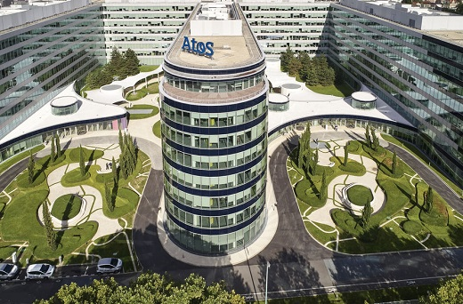

Ecole Jean Lurçat : Maternelle et Primaire
J'ai grandi dans cette école, qui restera à graver dans mes mémoires
https://www.ville-gennevilliers.fr/339/grandir/a-l-ecole/ecoles-elementaires.htm
Une image de mon ancienne école :
Etudiant en DUT informatique
Je vous présente ici mon parcours scolaire et l'expérience que j'ai acquise durant toutes ces années
J'ai grandi dans cette école, qui restera à graver dans mes mémoires
https://www.ville-gennevilliers.fr/339/grandir/a-l-ecole/ecoles-elementaires.htm
Une image de mon ancienne école :
 J'ai obtenu mon DNB mention très bien là-bas et les profs étaient très pédagogues. Merci le collège !
http://www.clg-moquet-gennevilliers.ac-versailles.fr/
Une image du gymnase de mon collège :
 C'est à partir de la terminale que j'ai décidé que je voulais vraiment m'orienter dans l'informatique.
J'ai appris à programmer en Python et nous avions réalisé un projet en ISN qui consistait en une bibliothèques où l'on pouvait sauvegarder des images.
http://www.lyc-galilee-gennevilliers.ac-versailles.fr/
Une image de mon lycée :
 Endroit dans lequel je suis actuellement, on apprend à faire énormément de choses, comme la programmation en C et C++, mais encore l'HTML et le CSS.
L'IUT Paris Descartes : https://www.iut.parisdescartes.fr/
Lien vers le portail ENT : https://ent.parisdescartes.fr/
En classe de troisième, j'ai effectué mon stage d'entreprise chez ATOS à Bezons
Personnellement, ce stage était passionnant et était déterminant car c'est grâce à ça que j'ai pu me familiariser avec le domaine informatique.
J'ai utilisé Scratch, manipulé Unity (que très peu) et utilisé une Raspberry Pi 2 Modèle B. On a également visité les locaux et j'ai réalisé à quel point c'était grand !!